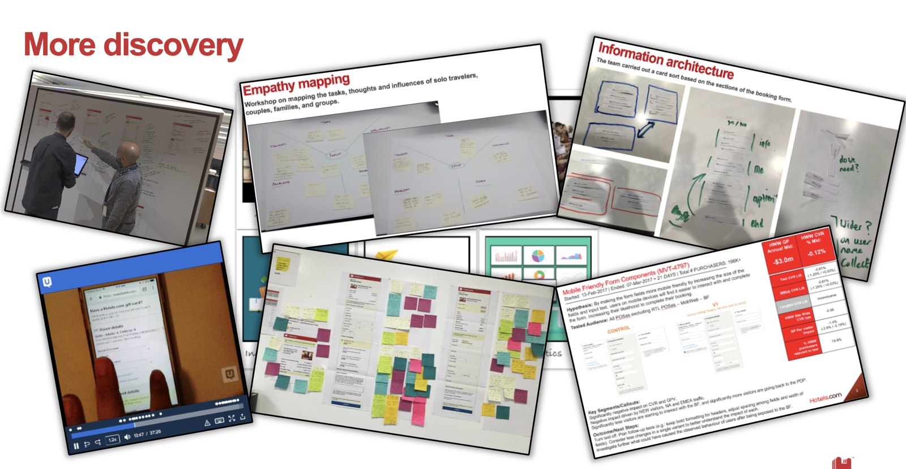
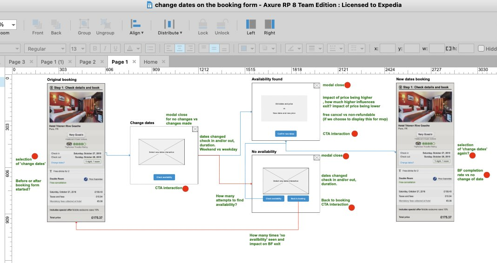
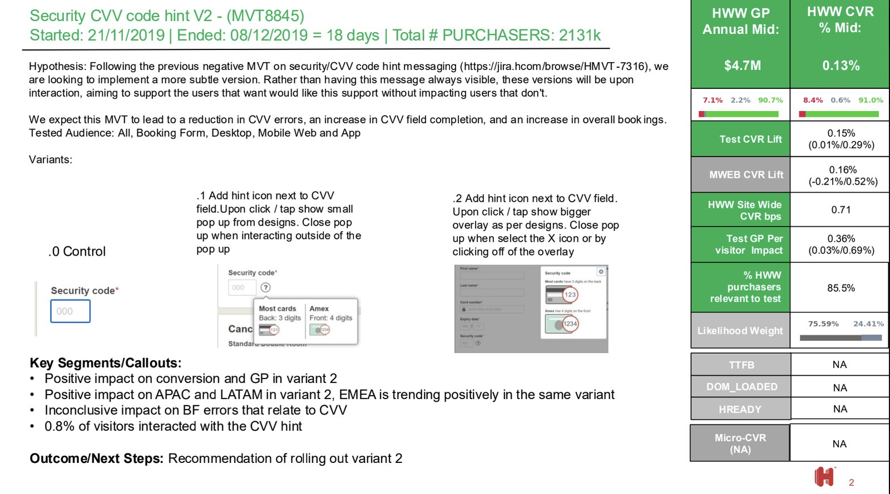
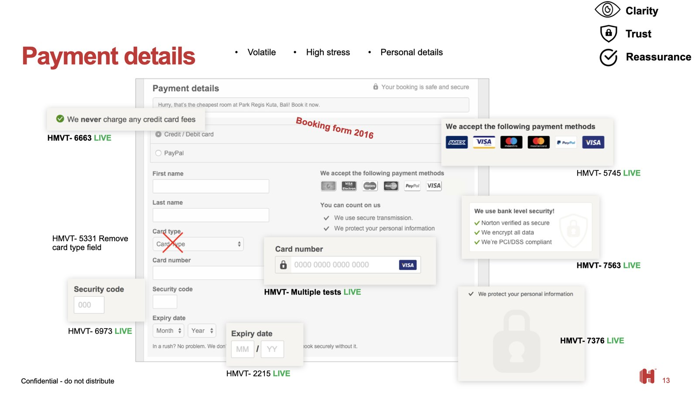

Hotels.com, 2016 to 2019
Checkout North Star
I wrote a long-term vision for the Hotels.com booking form, specified how to measure it, and designed three years of tests against it.
- My role
- Product Designer on the checkout team, then Senior Product Designer.
- What I did myself
- Wrote the North Star document. Specified the tracking. Designed the tests and wrote the test design decks. Ran the call-listening research.
- What others did
- Analysts ran the tests and modelled the gross profit. Every money figure on this page is their estimate.
- Scale
- Tests ran across desktop, mobile web and the native apps, with more than a million purchasers in each.
The vision
The document started from a question about feeling. How do we want people to feel on the booking form? I set what we thought people felt at the time against what we wanted them to feel, and settled on five themes. The form should be reassuring, trustworthy, effortless, delighting and secure.
I built it on research the company already had from Saudi Arabia, Japan, Taiwan, Colombia and Canada, on a structured comparison with competitors' booking forms, and on academic work about frustration and emotion in interfaces.
I told that story to stakeholders to get it funded. Then I broke it into pieces the team could test a quarter at a time. A year later I presented the next stage to the leadership team as a north star with alternative paths towards it.

I specified the measurement too
When I audited the tracking, the booking form recorded four events. I specified thirteen new queries and wrote out the definition of each.
They included which field a person touches first, validation errors by field, time to complete against time to abandon, and whether people who used saved details converted better.
Listening to the calls
I went to the contact centre and listened to live calls in three sessions over seven months. Hotels.com handled about 15 million calls a year.
In more than half of the calls about availability, the hotel was available. The information was on the site and people did not believe it. I estimated that calls about availability cost more than $10 million a year. That reframed a contact-centre cost as a design problem and helped unlock investment in self-service.
One finding went against instinct. Removing the phone number from the booking form in the Netherlands reduced conversion, because people who are about to commit have questions. The number went back.
Later I used call data again to show how many calls were about changing dates. I led the research, the prototype and rounds of rapid testing on a change-dates concept until it had the support to be tested live.

Six wins
| Test | When | Estimate |
|---|---|---|
| Check-in and check-out dates, first iteration | 2017 | $8.5M |
| Check-in and check-out dates, second iteration | 2017 to 2018 | $6.5M |
| Check-in and check-out dates, fourth iteration | 2018 | $3.9M |
| Icons next to section titles | 2016 | $5.8M |
| Step one, "Check details and book" | 2017 | $2.9M |
| Error message style | 2018 | $4.1M |
| Combined | $31.7M |
The dates series ran to four iterations. Three paid and one was inconclusive on gross profit.
A later test in 2019 added a hint showing where to find the security code on a card. It was estimated at around $4.7M a year, within a range from $389K to $9.0M. It is separate from the six above.

And the tests that did not win
A tidy-up that lost money
We cleaned up the headings on the terms and cancellation policy to make the form easier to read. It was estimated to lose $5.3M a year, with 99% significance of a negative effect. We turned it off. The damage was concentrated among people looking at free-cancellation bookings.
Measuring a change we were legally required to make
Legal required a change to the wording next to the Book button in the US. We tested it to learn what it would cost before complying. It showed 91% significance of a negative effect on conversion. We turned it off and went back to the legal team with the result.
A win that does not count towards the total
Stakeholders did not want to test messaging about the price guarantee. I argued for a variant. It was significantly positive on conversion in North America, by 0.38%, and rolled out there. Its effect on gross profit was inconclusive, so it is not one of the six.
Arguing for the users the data overlooked
The business was centred on the US, and the data showed iPhone users spent more. Roadmap decisions followed that. iPhone improvements shipped first, Android followed, and the two experiences drifted apart.
I argued that this view should not be applied everywhere. I used device and market data to show that instalment payments in Brazil and Mexico, and Hotels.com features across Asian markets, mostly served Android users. It changed how those teams thought about the differences between their users.
I also designed for individual markets. That included instalments for Mexico and Brazil, and a different payment design for Germany's security standards. We tested every design in Greek to check a complex language and with Turkish lira to check long numbers.
